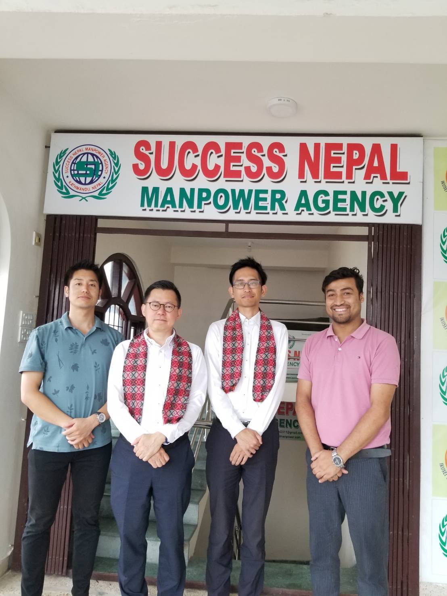
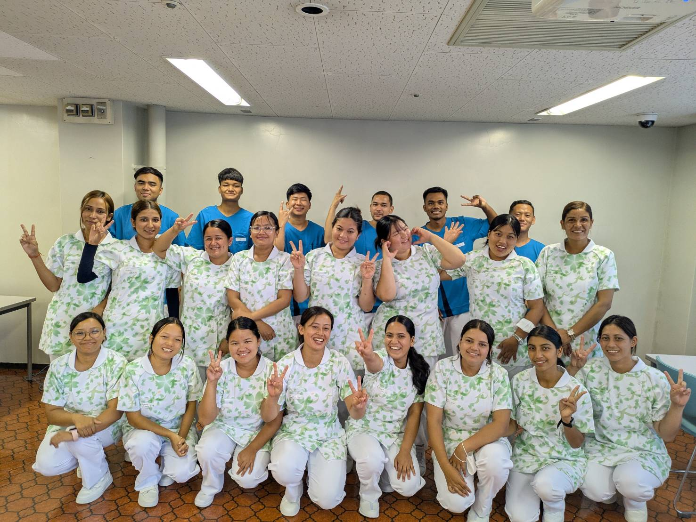

人材紹介・採用支援
ミスマッチのない採用を、一括サポート
有料職業紹介事業 27-ユ-304342

写真：送り出し機関との候補者選定・採用サポートの様子
Service 01
採用の「前」から
採用の「前」から
「後」まで、伴走します。
求人票の作成・候補者の選定・面談・在留資格の申請・入社手続きまで、採用に関わるすべての工程を一括でサポートします。担当者様の工数を最小化しながら、確実な採用を実現します。
- 求人票作成〜入社手続きまで一気通貫対応
- 面談・通訳サポートを完全代行
- 在留資格申請は提携行政書士と連携
- 入社後の定着フォローアップも継続実施
Flow
採用の流れ
無料相談・ヒアリング
業種・採用人数・時期・予算・必要スキルをヒアリング。御社に最適なプランをご提案します。
候補者選定・マッチング
現地ネットワークから候補者を厳選。日本語力・スキル・人柄を事前に確認した上でご紹介します。
面談・採用判断
オンライン面談の設定・通訳サポートを行います。複数候補者との面談も柔軟に対応します。
在留資格手続き
在留資格の申請・変更・更新を提携行政書士と連携してスピーディに対応。書類不備を防ぎます。
入社・定着支援
入社後も定期的にフォローアップ。早期離職のリスクを早期に察知し、対応します。
Industries
対応業種

写真：建設・介護・農業・外食など多業種での活躍介護・外食・農業・建設の4業種に特化。各業種の特定技能・技能実習・技術ビザに対応した手続きを、業種ごとの専門知識を持つスタッフが担当します。
介護
介護施設・老人ホーム・デイサービス
特定技能・技能実習・EPA等、多様な在留資格に対応。施設の規模・体制に合わせた人数でご紹介します。
外食
飲食店・レストランチェーン
調理スタッフ・ホール・厨房補助など幅広い職種に対応。シフト制・深夜対応も相談可能です。
農業
農場・ハウス農業・農産物加工
季節労働・通年雇用ともに対応。農業特定技能の手続きサポートも一括で行います。
建設
建設・土木・内装・塗装
特定技能・技術ビザの両方で対応。各職種の技術水準を事前確認した上でご紹介します。